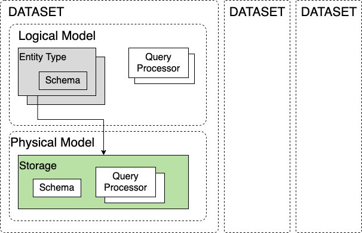
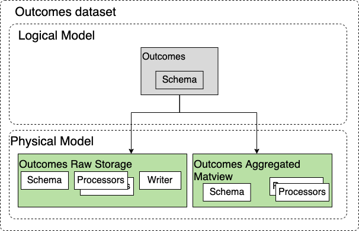
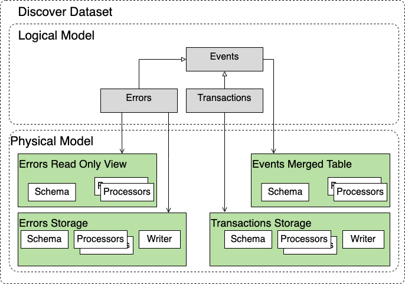
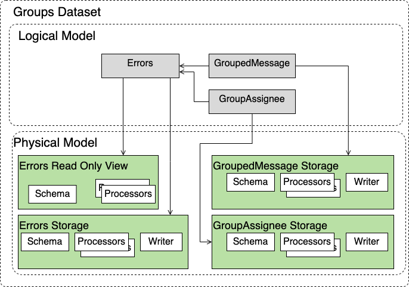

Snuba Data Model¶
This section explains how data is organized in Snuba and how user facing data is mapped to the underlying database (Clickhouse in this case).
The Snuba data model is divided horizontally into a logical model and a physical model. The logical data model is what is visible to the Snuba clients through the Snuba query language. Elements in this model may or may not map 1:1 to tables in the database. The physical model, instead, maps 1:1 to database concepts (like tables and views).
The reasoning behind this division is that it allows Snuba to expose a stable interface through the logical data model and perform complex mapping internally to execute a query on different tables (part of the physical model) to improve performance in a way that is transparent to the client.
The rest of this section outlines the concepts that compose the two models and how they are connected to each other.
The main concepts, described below are dataset, entity and storage.
Datasets¶
A Dataset is a name space over Snuba data. It provides its own schema and it is independent from other datasets both in terms of logical model and physical model.
Examples of datasets are, discover, outcomes, sessions. There is no relationship between them.
A Dataset can be seen as a container for the components that define its abstract data model and its concrete data model that are described below.
In term of query language, every Snuba query targets one and only one Dataset, and the Dataset can provide extensions to the query language.
Entities and Entity Types¶
The fundamental block of the logical data model Snuba exposes to the client is the Entity. In the logical model an entity represents an instance of an abstract concept (like a transaction or an error). In practice an Entity corresponds to a row in a table in the database. The Entity Type is the class of the Entity (like Error**s** or Transaction**s**).
The logical data model is composed by a set of Entity Types and by their relationships.
Each Entity Type has a schema which is defined by a list of fields with their associated abstract data types. The schemas of all the Entity Types of a Dataset (there can be several) compose the logical data model that is visible to the Snuba client and against which Snuba Queries are validated. No lower level concept is supposed to be exposed.
Entity Types are unequivocally contained in a Dataset. An Entity Type cannot be present in multiple Datasets.
Relationships between Entity Types¶
Entity Types in a Dataset are logically related. There are two types of relationships we support:
Entity Set Relationship. This mimics foreign keys. This relationship is meant to allow joins between Entity Types. It only supports one-to-one and one-to-many relationships at this point in time.
Inheritance Relationship. This mimics nominal subtyping. A group of Entity Types can share a parent Entity Type. Subtypes inherit the schema from the parent type. Semantically the parent Entity Type must represent the union of all the Entities whose type inherit from it. It also must be possible to query the parent Entity Type. This cannot be just a logical relationship.
Entity Type and consistency¶
The Entity Type is the largest unit where Snuba can provide some strong data consistency guarantees. Specifically it is possible to query an Entity Type expecting Serializable Consistency (please don’t use that. Seriously, if you think you need that, you probably don’t). This does not extend to any query that spans multiple Entity Types where, at best, we will have eventual consistency.
This also has an impact on Subscription queries. These can only work on one Entity Type at a time since, otherwise, they would require consistency between Entity Types, which we do not support.
Attention
To be precise the unit of consistency (depending on the Entity Type) can be even smaller and depend on how the data ingestion topics are partitioned (project_id for example), the Entity Type is the maximum Snuba allows. More details are (ok, will be) provided in the Ingestion section of this guide.
Storage¶
Storages represent and define the physical data model of a Dataset. Each Storage represent is materialized in a physical database concept like a table or a materialized view. As a consequence each Storage has a schema defined by fields with their types that reflects the physical schema of the DB table/view the Storage maps to and it is able to provide all the details to generate DDL statements to build the tables on the database.
Storages are able to map the logical concepts in the logical model discussed above to the physical concept of the database, thus each Storage needs to be related with an Entity Type. Specifically:
Each Entity Type must be backed by least one Readable Storage (a Storage we can run query on), but can be backed by multiple Storages (for example a pre-aggregate materialized view). Multiple Storages per Entity Type are meant to allow query optimizations.
Each Entity Type must be backed by one and only one Writable Storage that is used to ingest data and fill in the database tables.
Each Storage is backing exclusively one Entity Type.
Examples¶
This section provides some examples of how the Snuba data model can represent some real world models.
These case studies are not necessarily reflecting the current Sentry production model nor they are part of the same deployment. They have to be considered as examples taken in isolation.
Single Entity Dataset¶
This looks like the Outcomes dataset used by Sentry. This actually does not reflect Outcomes as of April 2020. It is though the design Outcomes should move towards.
This Dataset has one Entity Type only which represent an individual Outcome ingested by the Dataset. Querying raw Outcomes is painfully slow so we have two Storages. One is the Raw storage that reflects the data we ingest and a materialized view that computes hourly aggregations that are much more efficient to query. The Query Planner would pick the storage depending if the query can be executed on the aggregated data or not.
Multi Entity Type Dataset¶
The canonical example of this Dataset is the Discover dataset.
This has three Entity Types. Errors, Transaction and they both inherit from Events. These form the logical data model, thus querying the Events Entity Type gives the union of Transactions and Errors but it only allows common fields between the two to be present in the query.
The Errors Entity Type is backed by two Storages for performance reasons. One is the main Errors Storage that is used to ingest data, the other is a read only view that is putting less load on Clickhosue when querying but that offers lower consistency guarantees. Transactions only have one storage and there is a Merge Table to serve Events (which is essentially a view over the union of the two tables).
Joining Entity types¶
This is a simple example of a dataset that includes multiple Entity Types that can be joined together in a query.
GroupedMessage and GroupAssingee can be part of a left join query with Errors. The rest is similar with what was discussed in the previous examples.